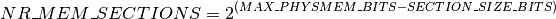

物理内存模型¶
系统中的物理内存可以用不同的方式进行寻址。最简单的情况是，物理内存从地址0开 始，跨越一个连续的范围，直到最大的地址。然而，这个范围可能包含CPU无法访问的 小孔隙。那么，在完全不同的地址可能有几个连续的范围。而且，别忘了NUMA，即不 同的内存库连接到不同的CPU。
Linux使用两种内存模型中的一种对这种多样性进行抽象。FLATMEM和SPARSEM。每 个架构都定义了它所支持的内存模型，默认的内存模型是什么，以及是否有可能手动 覆盖该默认值。
所有的内存模型都使用排列在一个或多个数组中的 struct page 来跟踪物理页 帧的状态。
无论选择哪种内存模型，物理页框号（PFN）和相应的 struct page 之间都存 在一对一的映射关系。
每个内存模型都定义了 pfn_to_page() 和 page_to_pfn()
帮助函数，允许从PFN到 struct page 的转换，反之亦然。
FLATMEM¶
最简单的内存模型是FLATMEM。这个模型适用于非NUMA系统的连续或大部分连续的 物理内存。
在FLATMEM内存模型中，有一个全局的 mem_map 数组来映射整个物理内存。对 于大多数架构，孔隙在 mem_map 数组中都有条目。与孔洞相对应的 struct page 对象从未被完全初始化。
为了分配 mem_map 数组，架构特定的设置代码应该调用free_area_init()函数。
然而，在调用memblock_free_all()函数之前，映射数组是不能使用的，该函数
将所有的内存交给页分配器。
一个架构可能会释放 mem_map 数组中不包括实际物理页的部分。在这种情况下，特
定架构的 pfn_valid() 实现应该考虑到 mem_map 中的孔隙。
使用FLATMEM，PFN和 struct page 之间的转换是直接的。 PFN - ARCH_PFN_OFFSET 是 mem_map 数组的一个索引。
ARCH_PFN_OFFSET 定义了物理内存起始地址不同于0的系统的第一个页框号。
SPARSEMEM¶
SPARSEMEM是Linux中最通用的内存模型，它是唯一支持若干高级功能的内存模型， 如物理内存的热插拔、非易失性内存设备的替代内存图和较大系统的内存图的延迟 初始化。
SPARSEMEM模型将物理内存显示为一个部分的集合。一个区段用mem_section结构 体表示，它包含 section_mem_map ，从逻辑上讲，它是一个指向 struct page 阵列的指针。然而，它被存储在一些其他的magic中，以帮助分区管理。区段的大小 和最大区段数是使用 SECTION_SIZE_BITS 和 MAX_PHYSMEM_BITS 常量 来指定的，这两个常量是由每个支持SPARSEMEM的架构定义的。 MAX_PHYSMEM_BITS 是一个架构所支持的物理地址的实际宽度，而 SECTION_SIZE_BITS 是一个任 意的值。
最大的段数表示为 NR_MEM_SECTIONS ，定义为

mem_section 对象被安排在一个叫做 mem_sections 的二维数组中。这个数组的 大小和位置取决于 CONFIG_SPARSEM_EXTREME 和可能的最大段数:
当 CONFIG_SPARSEMEM_EXTREME 被禁用时， mem_sections 数组是静态的，有 NR_MEM_SECTIONS 行。每一行持有一个 mem_section 对象。
当 CONFIG_SPARSEMEM_EXTREME 被启用时， mem_sections 数组被动态分配。 每一行包含价值 PAGE_SIZE 的 mem_section 对象，行数的计算是为了适应所有的 内存区。
架构设置代码应该调用sparse_init()来初始化内存区和内存映射。
- 通过SPARSEMEM，有两种可能的方式将PFN转换为相应的 struct page –“classic sparse”和
“sparse vmemmap”。选择是在构建时进行的，它由 CONFIG_SPARSEMEM_VMEMMAP 的 值决定。
Classic sparse在page->flags中编码了一个页面的段号，并使用PFN的高位来访问映射该页 框的段。在一个区段内，PFN是指向页数组的索引。
Sparse vmemmapvmemmap使用虚拟映射的内存映射来优化pfn_to_page和page_to_pfn操 作。有一个全局的 struct page *vmemmap 指针，指向一个虚拟连续的 struct page 对象阵列。PFN是该数组的一个索引，struct page 从 vmemmap 的偏移量是该页的PFN。
为了使用vmemmap，一个架构必须保留一个虚拟地址的范围，以映射包含内存映射的物理页，并
确保 vmemmap`指向该范围。此外，架构应该实现 :c:func:`vmemmap_populate 方法，
它将分配物理内存并为虚拟内存映射创建页表。如果一个架构对vmemmap映射没有任何特殊要求，
它可以使用通用内存管理提供的默认 vmemmap_populate_basepages()。
虚拟映射的内存映射允许将持久性内存设备的 struct page 对象存储在这些设备上预先分
配的存储中。这种存储用vmem_altmap结构表示，最终通过一长串的函数调用传递给
vmemmap_populate()。vmemmap_populate()实现可以使用 vmem_altmap 和
vmemmap_alloc_block_buf() 助手来分配持久性内存设备上的内存映射。
ZONE_DEVICE¶
ZONE_DEVICE 设施建立在 SPARSEM_VMEMMAP 之上，为设备驱动识别的物理地址范
围提供 struct page mem_map 服务。 ZONE_DEVICE 的 “设备” 方面与以下
事实有关：这些地址范围的页面对象从未被在线标记过，而且必须对设备进行引用，而不仅仅
是页面，以保持内存被“锁定”以便使用。 ZONE_DEVICE ，通过 devm_memremap_pages() ，
为给定的pfns范围执行足够的内存热插拔来开启 pfn_to_page()，
page_to_pfn(), ，和 get_user_pages() 服务。由于页面引
用计数永远不会低于1，所以页面永远不会被追踪为空闲内存，页面的 struct list_head lru
空间被重新利用，用于向映射该内存的主机设备/驱动程序进行反向引用。
虽然 SPARSEMEM 将内存作为一个区段的集合，可以选择收集并合成内存块，但
ZONE_DEVICE 用户需要更小的颗粒度来填充 mem_map 。鉴于 ZONE_DEVICE
内存从未被在线标记，因此它的内存范围从未通过sysfs内存热插拔api暴露在内存块边界
上。这个实现依赖于这种缺乏用户接口的约束，允许子段大小的内存范围被指定给
arch_add_memory() ，即内存热插拔的上半部分。子段支持允许2MB作为
devm_memremap_pages() 的跨架构通用对齐颗粒度。
ZONE_DEVICE 的用户是:
pmem: 通过DAX映射将平台持久性内存作为直接I/O目标使用。
hmm: 用 ->page_fault() 和 ->page_free() 事件回调扩展 ZONE_DEVICE ， 以允许设备驱动程序协调与设备内存相关的内存管理事件，通常是GPU内存。参见/vm/hmm.rst。
p2pdma: 创建 struct page 对象，允许PCI/E拓扑结构中的peer设备协调它们之间的 直接DMA操作，即绕过主机内存。